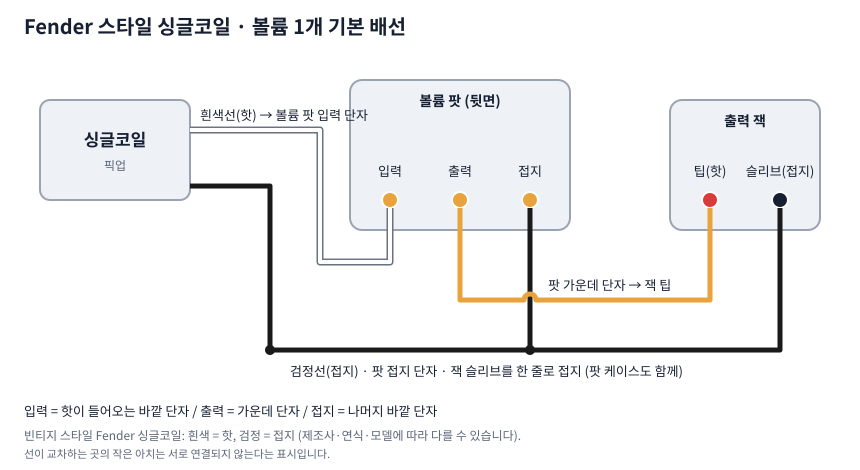

Fender 스타일 싱글코일 픽업 기본 배선도 (볼륨 1개)
대부분의 싱글코일은 선이 두 가닥뿐이라 배선이 단순합니다. 빈티지 스타일 Fender 계열은 흰색이 핫, 검정이 접지입니다. 가장 기본적인 구성을 그림으로 정리했습니다.
기본 배선도

- 흰색선(핫): 볼륨 팟의 입력 단자(바깥 단자 중 한쪽)에 연결합니다.
- 팟 가운데 단자: 출력 잭의 팁(핫)에 연결합니다.
- 검정선(접지): 볼륨 팟의 나머지 바깥 단자, 팟 케이스, 잭의 슬리브를 한 줄로 접지합니다.
선 색에 대해
Fralin, Lollar 같은 빈티지 스타일 싱글코일은 흰색(또는 노랑)을 핫, 검정을 접지로 쓰는 것이 공개된 설명서에 나와 있습니다. 하지만 Fender 자체도 모델과 연식에 따라 색 체계가 다르기 때문에 가지고 있는 제품의 설명서로 확인하는 것이 안전합니다.
소리가 안 나거나 이상할 때
- 핫과 접지를 반대로 연결하면 소리가 약하거나 잡음이 늘 수 있습니다.
- 접지가 한 군데라도 끊어지면 웅 하는 잡음이 심해집니다.
- 납땜이 차갑게 굳어 접촉이 불안한 경우도 많으니 납땜 부위를 다시 확인해 보세요.
- 픽업이 여러 개인 기타에서 하나만 위상이 반대면 두 픽업을 함께 쓸 때 소리가 얇아집니다. 이 경우 해당 픽업의 핫·접지를 서로 바꿔서 확인합니다.
험버커 배선이 궁금하다면
4선 험버커는 직렬·병렬·코일 스플릿 배선이 가능합니다. 험버커 선 색상 비교에서 이어서 확인해 보세요.
이 글은 일반적인 정보 제공 목적이며 모든 제품과 연식에 맞는 것은 아닙니다. 납땜 작업은 인두 화상과 환기에 주의하고, 선 색이 확실하지 않으면 멀티미터로 확인하거나 전문 수리점에 맡기세요. 작업 중 발생한 손상에 대한 책임은 작업자에게 있습니다.